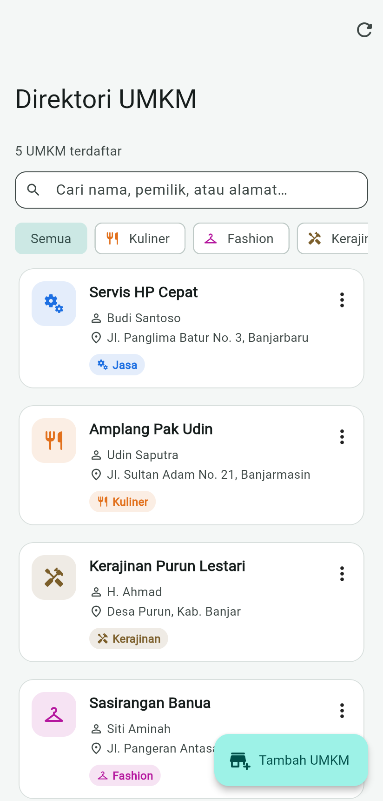

Dosen Pengampu: Rafi’e, M.Kom
Disusun oleh:
| Nama | : .......................................... |
| NIM | : .......................................... |
REST API adalah antarmuka berbasis protokol HTTP yang memungkinkan aplikasi klien bertukar data dengan server. Data umumnya dikirim dalam format JSON karena ringan dan mudah diproses. Praktikum ini menerapkan materi tersebut dengan membangun REST API data UMKM menggunakan CodeIgniter 4, lalu mengonsumsinya dari aplikasi Flutter.
PHP 8.4, CodeIgniter 4.7.6, SQLite/MySQL, Flutter 3 dengan package http, Google Chrome (DevTools), dan Visual Studio Code.
API dibuat dengan ResourceController pada app/Controllers/Api/UmkmController.php. Validasi data ditulis pada app/Models/UmkmModel.php. Setiap response memakai format {success, message, data, meta, errors} sesuai materi. Daftar endpoint ditunjukkan pada Tabel 2.1.
Tabel 2.1 Daftar endpoint REST API UMKM
| Method | Endpoint | Fungsi |
|---|---|---|
| GET | /api/umkm | Mengambil daftar UMKM (pagination, pencarian, filter) |
| GET | /api/umkm/{id} | Mengambil detail UMKM |
| POST | /api/umkm | Menambah data UMKM |
| PUT | /api/umkm/{id} | Memperbarui data UMKM |
| DELETE | /api/umkm/{id} | Menghapus data UMKM |
Pengujian dilakukan pada server lokal http://localhost:8080. Request dan response diamati melalui tab Network pada Chrome DevTools. Ringkasan hasil ditunjukkan pada Tabel 2.2.
Tabel 2.2 Hasil pengujian API
| No | Pengujian | Request | Status |
|---|---|---|---|
| 1 | Ambil daftar UMKM | GET /api/umkm?page=1&per_page=3 | 200 OK |
| 2 | Ambil detail UMKM | GET /api/umkm/1 | 200 OK |
| 3 | Tambah data valid | POST /api/umkm | 201 Created |
| 4 | Tambah data tidak valid | POST /api/umkm | 400 Bad Request |
| 5 | Perbarui data | PUT /api/umkm/6 | 200 OK |
| 6 | Hapus data | DELETE /api/umkm/6 | 200 OK |
| 7 | Ambil data yang sudah dihapus | GET /api/umkm/6 | 404 Not Found |
| 8 | Pencarian dan filter kategori | GET /api/umkm?kategori=Kuliner&search=Banjar | 200 OK |
Seluruh pengujian memberikan status sesuai harapan. Pada data tidak valid (Gambar 2.4), API mengembalikan pesan kesalahan untuk setiap field. Pada data yang tidak ditemukan (Gambar 2.7), API mengembalikan status 404.


Response JSON diubah menjadi objek Dart melalui model class Umkm dengan factory Umkm.fromJson() dan method toJson(). Request dikirim oleh UmkmService menggunakan async/await dan try-catch. Tampilan aplikasi ditunjukkan pada Gambar 2.9.



Praktikum ini menunjukkan bahwa REST API berperan sebagai kontrak antara server dan klien. Format response dan status code yang konsisten memudahkan klien membedakan keberhasilan dan kegagalan tanpa membaca isi pesan. CodeIgniter 4 mempermudah pembuatan API karena resource route langsung memetakan method HTTP ke fungsi controller, dan validasi cukup ditulis sekali pada model.
Pada sisi Flutter, parsing dengan model class lebih aman daripada mengakses Map secara langsung karena tipe data diperiksa saat kompilasi. Package http sudah cukup untuk kebutuhan CRUD sederhana, sedangkan Dio lebih cocok bila dibutuhkan interceptor atau upload file.
Kendala yang dihadapi adalah sebagai berikut:
cors dan menambahkan route OPTIONS.localhost, sehingga base URL diganti menjadi 10.0.2.2.id dari database terkadang bertipe string, sehingga dikonversi ke integer pada backend dan saat parsing di Flutter.REST API CRUD UMKM berhasil dibuat dengan CodeIgniter 4. Seluruh endpoint telah diuji dan memberikan status serta response sesuai rancangan. Aplikasi Flutter berhasil menampilkan, menambah, mengubah, dan menghapus data melalui API dengan JSON parsing berbasis model class.
Repository GitHub: https://github.com/ichnasa/flutter_rest_api
Folder backend/ berisi REST API CodeIgniter 4, dan folder frontend/ berisi aplikasi Flutter.